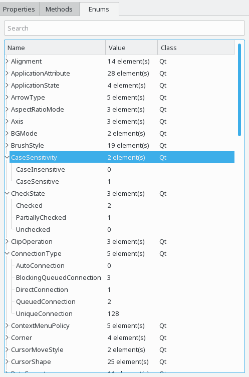

The enums view is available for all QObject and QMetaObject instances and shows enums and flags defined in the corresponding class, as far as introspectable via QMetaEnum.

The enums and flags view shows two levels of information. On the top-level you see the list of all enums and flags listed in the corresponding QMetaObject, in particular:
On the second level you find the names and values of each element of the corresponding enum or flag.